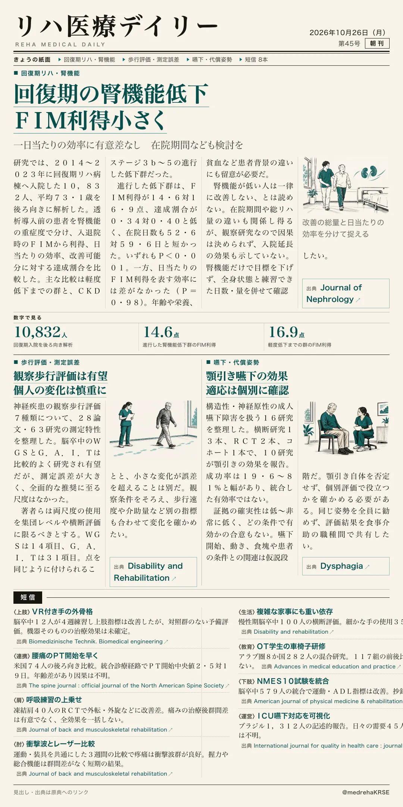
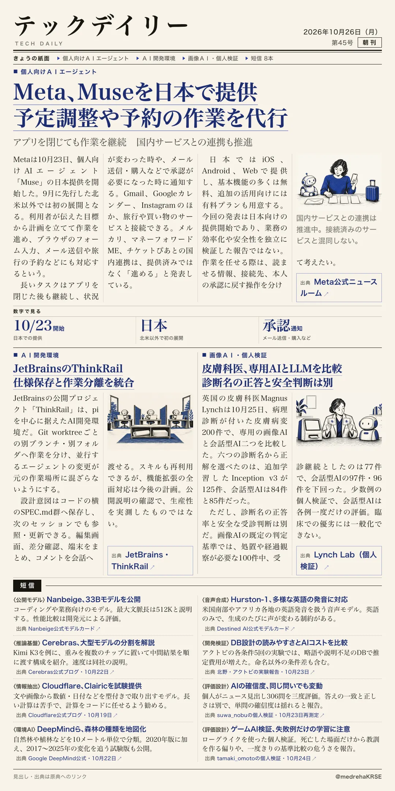

リハ医療デイリー
回復期の腎機能低下 ＦＩＭ利得小さく
一日当たりの効率に有意差なし 在院期間なども検討を
回復期入院10,832人の後ろ向き研究。進行した腎機能低下群はFIM利得14.6対16.9点、在院52.6対59.6日。FIM効率の群差なし（P=.98）。

テックデイリー
Meta、Museを日本で提供 予定調整や予約の作業を代行
アプリを閉じても作業を継続 国内サービスとの連携も推進
Metaの個人向けAIエージェントが日本に展開。任せる作業と承認が必要な操作を分けて捉える。
